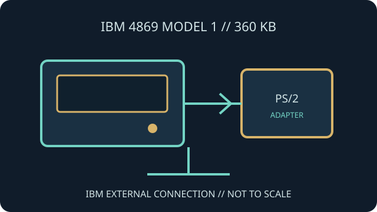

[ INDIVIDUAL COMPONENT // FLOPPY DRIVES ]
IBM 4869 Model 1 External Diskette Drive
IBM's 4869 Model 1 is an external 5.25-inch diskette drive variant associated with the IBM PS/2 external-drive arrangement. Its dedicated adapter and cable distinguish it from a bare internal PC drive.

IDENTIFICATION NOTE: This record is for the 360 KB Model 1 configuration (commonly identified as 4869-001, with regional suffixes). Verify the rear label and mains rating; model suffixes can denote different electrical variants.
Model specifications
| Catalog subcategory | External floppy mechanisms |
|---|---|
| Exact model / capacity | IBM 4869 Model 1 / 4869-001 class, 5.25-inch, 360 KB double-density drive. |
| Enclosure | External desktop drive enclosure with its own power arrangement and dedicated data connection. |
| Host interface | IBM-specific external cable and compatible PS/2 5.25-inch disk adapter; not a direct 34-pin internal-drive connection. |
| Media / format | 5.25-inch double-density media in the supported 360 KB format; host BIOS, adapter and DOS configuration determine availability. |
| Host compatibility | Compatible IBM PS/2 systems equipped for the 4869 external-drive arrangement. Do not infer compatibility from the drive's physical media size. |
Model-specific compatibility checks
- Read the complete model and voltage suffix from the rear label before powering the unit.
- Confirm the required IBM adapter card, fixed cable and supported PS/2 configuration; non-IBM use requires separately engineered interface conversion.
- Do not interchange the Model 1 and higher-capacity 4869 configurations based only on enclosure similarity.
Preservation and service notes
Inspect the enclosure, power inlet, attached cable and drive mechanism before use. Record internal part numbers and FRU labels if the enclosure has been opened or repaired.
Use known-good, expendable 360 KB media for initial tests and preserve original disks using a verified compatible imaging setup.
Manufacturer documentation & sources
- The Centre for Computing History — IBM 4869 External Disk DriveCollection record identifying the IBM 4869 external disk drive and its product context.
- IBM 4869 360 KB external disk drive / FRU 72X6759Part listing for the 360 KB 5.25-inch Model 1 class; treat sales data as secondary and verify against the unit label.
IBM adapter compatibility and voltage should be checked against the original model documentation before installation.